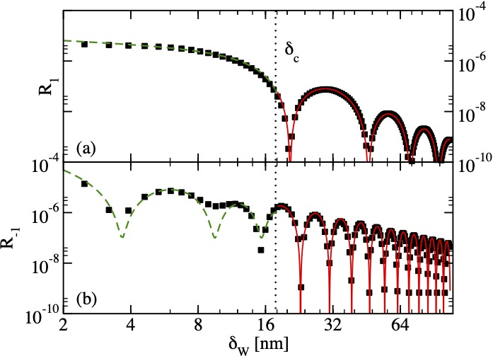

Phys. Rev. B 104, 024508 (2021)

Phys. Rev. B 101, 014301 (2020) Preliminary work for NCN OPUS

Phys. Rev. B 102, 064404 (2020)
for NAWA/DAAD 2019
I am the Principal Investigator of the following projects:
NAWA Bekker Grant 2021
NAWA Bekker Grant for a 4 month visit to Freie Universität Berlin to work with Prof. Piet Brouwer in 2021.
NCN OPUS Grant 2020-2023
NCN Opus grant on Quench Dynamics of Topological Materials: Dynamical Phase Transitions and Entanglement, 2020-2023
NAWA/DAAD Bilateral Exchange 2019
DAAD/NAWA Bilateral Exchange Grant on "The Effect of Coulomb Interactions on Topological Spin Orbit Torques" jointly between Dr Nicholas Sedlmayr and Prof. Sebastian Eggert from the Technical University of Kaiserslautern, 2019.